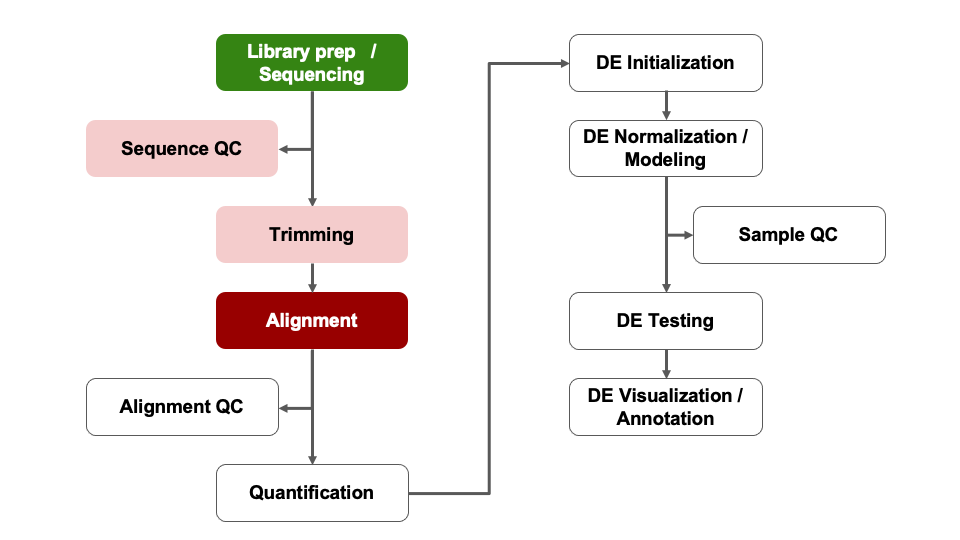

Alignment
In this module, we will learn:
- the concept of splice-aware alignments
- the two steps needed to run RSEM+STAR
- details of SAM and BAM files, and RSEM outputs
Differential Expression Workflow
We’ll discuss the alignment and gene quantification steps which gather the necessary data that we will need prior to testing for differential expression, the topic of Day 2.

Alignment and Gene Quantification
The FASTQ files of raw sequenced reads are untethered from any notion of where they came from in the genome, and which transcribed genes the sequence belongs to. The alignment and gene quantification steps fill in that gap and allow us to proceed with the question we are really interested in: Which genes are differentially expressed between groups of samples?
We will use RSEM (paper and GitHub) combined with STAR Aligner (paper and GitHub) to accomplish the task of read mapping and gene quantifcation simultaneously.
STAR
The “Spliced Transcripts Alignment to a Reference” (STAR) Aligner is aware of splice-sites of transcripts and is able to align reads that span them. The figure below illustrates the difference between splice-unaware aligners (e.g. Bowtie2) and splice-aware aligners (e.g. STAR).
Some benefits of splice-aware aligners include:
- Fewer reads are discarded for lack of alignments, leading to more accurate gene quantification.
- Direct evidence of isoform usage is possible.
We should note that the default parameters for STAR are optimized for mammalian genomes.
Credit: https://raw.githubusercontent.com/hbctraining/Intro-to-rnaseq-hpc-O2/master/lectures/Sequence_alignment.pdf
RSEM
RSEM (RNA-seq by Expectation Maximization) determines gene and isoform abundance using an expectation maximization (EM) algorithm to determine the probability that any particular read originated from a particular transcript. From there, gene-level quantification is reported by effectively collapsing the isoform quantifications over all isoforms belonging to the gene.
The primary issue that RSEM attempts to solve is that reads can align to multiple isoforms (when, for example, they share an exon), and that creates ambiguity in deciding which isoform a read gets assigned to for quantification. RSEM uses the EM algorithm described above to handle this ambiguity appropriately.
Running RSEM+STAR
RSEM can be run with just two commands: the first rsem-prepare-reference (manual) builds an index for STAR and RSEM to use, and the second rsem-calculate-expression (manual) does the alignment and gene quantification.
We’ll explore the expected outputs from these commands and discuss their contents, before creating our own reference and aligning reads with our example data.
rsem-prepare-reference Details
The purpose of rsem-prepare-reference is to create a reference index for alignment. A reference index is essentially a lookup table that speeds up the finding of sequence matches for alignment. In the case of a splice-aware aligner, the reference index is also aware of the various splice junctions at locations in the gene model, and a subset of reads will map across these. This allows us to infer isoform usage later on.
rsem-prepare-reference will use a FASTA file and a GTF as inputs, and it will produce a number of large files which make up the index. RSEM has the flexible capability of supporting multiple different aligners. We’ll be using STAR. The output files therefore contain items from the indexing process of STAR and RSEM. These files allow for the fast and efficient search and retrieval of sequence and gene-model information during alignment and quantification. The outputs will look like the following:
GRCm38.102.chr19reduced.chrlist
GRCm38.102.chr19reduced.grp
GRCm38.102.chr19reduced.idx.fa
GRCm38.102.chr19reduced.n2g.idx.fa
GRCm38.102.chr19reduced.seq
GRCm38.102.chr19reduced.ti
GRCm38.102.chr19reduced.transcripts.fa
Genome
Log.out
SA
SAindex
chrLength.txt
chrName.txt
chrNameLength.txt
chrStart.txt
exonGeTrInfo.tab
exonInfo.tab
geneInfo.tab
genomeParameters.txt
sjdbInfo.txt
sjdbList.fromGTF.out.tab
sjdbList.out.tab
transcriptInfo.tab
rsem-calculate-expression Details
After preparing the reference index, we can do alignment and quantification with the rsem-calculate-expression command (here is a link to the manual). For our inputs, we will be using our FASTQ reads and the path to the reference index that we create.
There are numerous outputs, which are laid out in the following table:
sample_N.genome.bam |
The alignments in genomic coordinates. Used for visualization in a genome browser such as IGV. |
sample_N.transcript.bam |
The alignments in transcriptomic coordinates. Not used for this workshop. |
sample_N.genes.results |
Gene-level results to be used in downstream DE analysis. |
sample_N.isoforms.results |
Isoform-level results. Not used for this workshop. |
The two results we will use most often from RSEM+STAR are the gene-level quantifications (sample_N.genes.results) and the alignments in genome-coordinates (sample_N.genome.bam). Each sample for which we run RSEM+STAR will have these output files named after the sample.
Genome Alignments
The sample_N.genome.bam alignments file is a special, compressed, version of a SAM file (sequence alignment/map). In order to view it, we have to use a special program called samtools.
If we were too peek inside of sample_N.genome.bam, we would see:
NB551521:212:H5L73AFX2:1:11101:16446:1034 0 2 10022660 255 148M * 0 0 GANAGACAGATATCCTACAAAACACAGAAAGACTAATAAACTCTTATGTTGACTATGAAAGCTGTAAGAAACTTCCAGAAGAAATATTGAAAATGTAGAATAACTGAAGTGTGCTGTGTGTCCATAGCTGTTCTGCTGAGGAAACATT AA#EEEEEEEEEEEEEEEEEEEEEEEEEEEEEEEEEEEEEEEEEEEEEEEEEEEEEEEEEEEEEEEEEEEEEEEEAEEEEEEEEEEEEEEEEEEEEEEEEEEEEEEEEEEEEEAEEEEEEEE<EEEEAEAEEAEA<A<AAAAEEEEEA NH:i:1 HI:i:1 AS:i:145 NM:i:1 MD:Z:2A145
NB551521:212:H5L73AFX2:1:11101:16366:1035 0 X 48488697 255 146M * 0 0 TANGTACGCACACAAATTGATCCATACCTTTACTTCCTTTTTTTCCAGCTACTGAATAAGGGGACCTTTCTATTCCTTTGTGTCTCACCATTTTATTGTCTTTCAGAATCTTCACCTGGTCCATTCATTCCTCTACCCTCTCCTGT AA#EEEEEEEEEEEEEEEEEEEEEEAEEEEEEEEEEEEEEEEEEE<EEEEEEEEEEEEEEEEEEEEEEEEEEEEEEEEEEEEEEEEEEEEEEE6EEEAEEEEEEEEEEEEEEEEEAEEEEEEEAAEEEE/<E<AA<<<AAAA<AEE NH:i:1 HI:i:1 AS:i:143 NM:i:1 MD:Z:2G143
The SAM format gives information about where each read maps to in the genome (one read per line), and has information about that mapping.
Gene-level Quantification
If we were to look at the top 3 lines of sample_N.genes.results, we see it is a plain-text file separated by tabs where each row is a gene, and the columns are described the first row.
| gene_id |
The ID from the gene model GTF. |
| transcript_id(s) |
The transcript IDs corresponding to the gene in the gene model GTF. |
| length |
The weighted average of its transcripts’ lengths. |
| effective_length |
The weighted average, over its transcripts, of the mean number of positions from which a fragment may start within the sequence of transcript. |
| expected_count |
The sum, over all transcripts, of the estimated counts from the EM algorithm. |
| TPM |
Transcript per million, a relative measure of transcript abundance where the sum of all TPMs is 1 million. |
| FPKM |
Fragments per kilobase of transcript per million mapped reads. |
The genes.results files for each sample can be directly imported into DESeq2 using the tximport R Bioconductor package.
Alternatively, we can combine these results into a count matrix. The count matrix can be very useful, since it contains summary-level data in a widely supported format, this makes it great for sharing and as input into different analyses.
RSEM Prepare Reference Exercise:
- View the help page for rsem-prepare-reference
- Create a command that will index our example genome, but do not run it
# View the help file
rsem-prepare-reference -h
# Create/execute the prepare-reference command
rsem-prepare-reference --gtf ../refs/GRCm38.102.chr19reduced.gtf --star --num-threads 1 ../refs/GRCm38.102.chr19reduced.fa ../refs/GRCm38.102.chr19reduced
RSEM Calculate Expression Exercise:
- View the help page for rsem-calculate-expression
- Create a command to execute RSEM / STAR alignment and quantification for one of our samples
# First create a directory for the aligned results
mkdir out_rsem
# Construct an RSEM command to align sample_A to our reference
rsem-calculate-expression --star --num-threads 1 --star-gzipped-read-file --star-output-genome-bam --keep-intermediate-files out_trimmed/sample_A_R1.trimmed.fastq.gz ../refs/GRCm38.102.chr19reduced out_rsem/sample_A
LS0tCnRpdGxlOiAiTW9kdWxlIDAzYjogQWxpZ25tZW50IgphdXRob3I6ICJVTSBCaW9pbmZvcm1hdGljcyBDb3JlIgpvdXRwdXQ6CiAgICAgICAgaHRtbF9kb2N1bWVudDoKICAgICAgICAgICAgaW5jbHVkZXM6CiAgICAgICAgICAgICAgICBpbl9oZWFkZXI6IGhlYWRlci5odG1sCiAgICAgICAgICAgIHRoZW1lOiBwYXBlcgogICAgICAgICAgICB0b2M6IHRydWUKICAgICAgICAgICAgdG9jX2RlcHRoOiA0CiAgICAgICAgICAgIHRvY19mbG9hdDogdHJ1ZQogICAgICAgICAgICBudW1iZXJfc2VjdGlvbnM6IGZhbHNlCiAgICAgICAgICAgIGZpZ19jYXB0aW9uOiB0cnVlCiAgICAgICAgICAgIG1hcmtkb3duOiBHRk0KICAgICAgICAgICAgY29kZV9kb3dubG9hZDogdHJ1ZQotLS0KPHN0eWxlIHR5cGU9InRleHQvY3NzIj4KYm9keXsgLyogTm9ybWFsICAqLwogICAgICBmb250LXNpemU6IDE0cHQ7CiAgfQpwcmUgewogIGZvbnQtc2l6ZTogMTJwdAp9Cjwvc3R5bGU+CgojIEFsaWdubWVudAoKSW4gdGhpcyBtb2R1bGUsIHdlIHdpbGwgbGVhcm46CgoqIHRoZSBjb25jZXB0IG9mIHNwbGljZS1hd2FyZSBhbGlnbm1lbnRzCiogdGhlIHR3byBzdGVwcyBuZWVkZWQgdG8gcnVuIFJTRU0rU1RBUgoqIGRldGFpbHMgb2YgU0FNIGFuZCBCQU0gZmlsZXMsIGFuZCBSU0VNIG91dHB1dHMKCiMgRGlmZmVyZW50aWFsIEV4cHJlc3Npb24gV29ya2Zsb3cKCldlJ2xsIGRpc2N1c3MgdGhlIGFsaWdubWVudCBhbmQgZ2VuZSBxdWFudGlmaWNhdGlvbiBzdGVwcyB3aGljaCBnYXRoZXIgdGhlIG5lY2Vzc2FyeSBkYXRhIHRoYXQgd2Ugd2lsbCBuZWVkIHByaW9yIHRvIHRlc3RpbmcgZm9yIGRpZmZlcmVudGlhbCBleHByZXNzaW9uLCB0aGUgdG9waWMgb2YgRGF5IDIuCgohW10oaW1hZ2VzL3dheWZpbmRlci93YXlmaW5kZXItQWxpZ25tZW50LnBuZykKPGJyPgo8YnI+Cjxicj4KPGJyPgoKIyBBbGlnbm1lbnQgYW5kIEdlbmUgUXVhbnRpZmljYXRpb24KClRoZSBGQVNUUSBmaWxlcyBvZiByYXcgc2VxdWVuY2VkIHJlYWRzIGFyZSB1bnRldGhlcmVkIGZyb20gYW55IG5vdGlvbiBvZiB3aGVyZSB0aGV5IGNhbWUgZnJvbSBpbiB0aGUgZ2Vub21lLCBhbmQgd2hpY2ggdHJhbnNjcmliZWQgZ2VuZXMgdGhlIHNlcXVlbmNlIGJlbG9uZ3MgdG8uIFRoZSBhbGlnbm1lbnQgYW5kIGdlbmUgcXVhbnRpZmljYXRpb24gc3RlcHMgZmlsbCBpbiB0aGF0IGdhcCBhbmQgYWxsb3cgdXMgdG8gcHJvY2VlZCB3aXRoIHRoZSBxdWVzdGlvbiB3ZSBhcmUgcmVhbGx5IGludGVyZXN0ZWQgaW46IFdoaWNoIGdlbmVzIGFyZSBkaWZmZXJlbnRpYWxseSBleHByZXNzZWQgYmV0d2VlbiBncm91cHMgb2Ygc2FtcGxlcz8KCldlIHdpbGwgdXNlIFJTRU0gKFtwYXBlcl0oaHR0cHM6Ly9ibWNiaW9pbmZvcm1hdGljcy5iaW9tZWRjZW50cmFsLmNvbS9hcnRpY2xlcy8xMC4xMTg2LzE0NzEtMjEwNS0xMi0zMjMpIGFuZCBbR2l0SHViXShodHRwczovL2dpdGh1Yi5jb20vZGV3ZXlsYWIvUlNFTSkpIGNvbWJpbmVkIHdpdGggU1RBUiBBbGlnbmVyIChbcGFwZXJdKGh0dHBzOi8vYWNhZGVtaWMub3VwLmNvbS9iaW9pbmZvcm1hdGljcy9hcnRpY2xlLzI5LzEvMTUvMjcyNTM3KSBhbmQgW0dpdEh1Yl0oaHR0cHM6Ly9naXRodWIuY29tL2FsZXhkb2Jpbi9TVEFSKSkgdG8gYWNjb21wbGlzaCB0aGUgdGFzayBvZiByZWFkIG1hcHBpbmcgYW5kIGdlbmUgcXVhbnRpZmNhdGlvbiBzaW11bHRhbmVvdXNseS4KCiMjIFNUQVIKClRoZSAiU3BsaWNlZCBUcmFuc2NyaXB0cyBBbGlnbm1lbnQgdG8gYSBSZWZlcmVuY2UiIChTVEFSKSBBbGlnbmVyIGlzIGF3YXJlIG9mIHNwbGljZS1zaXRlcyBvZiB0cmFuc2NyaXB0cyBhbmQgaXMgYWJsZSB0byBhbGlnbiByZWFkcyB0aGF0IHNwYW4gdGhlbS4gVGhlIGZpZ3VyZSBiZWxvdyBpbGx1c3RyYXRlcyB0aGUgZGlmZmVyZW5jZSBiZXR3ZWVuIHNwbGljZS11bmF3YXJlIGFsaWduZXJzIChlLmcuIEJvd3RpZTIpIGFuZCBzcGxpY2UtYXdhcmUgYWxpZ25lcnMgKGUuZy4gU1RBUikuCgpTb21lIGJlbmVmaXRzIG9mIHNwbGljZS1hd2FyZSBhbGlnbmVycyBpbmNsdWRlOgoKKiBGZXdlciByZWFkcyBhcmUgZGlzY2FyZGVkIGZvciBsYWNrIG9mIGFsaWdubWVudHMsIGxlYWRpbmcgdG8gbW9yZSBhY2N1cmF0ZSBnZW5lIHF1YW50aWZpY2F0aW9uLgoqIERpcmVjdCBldmlkZW5jZSBvZiBpc29mb3JtIHVzYWdlIGlzIHBvc3NpYmxlLgoKV2Ugc2hvdWxkIG5vdGUgdGhhdCB0aGUgZGVmYXVsdCBwYXJhbWV0ZXJzIGZvciBTVEFSIGFyZSBvcHRpbWl6ZWQgZm9yICoqbWFtbWFsaWFuIGdlbm9tZXMqKi4KCjxjZW50ZXI+CgohW1NwbGljZS1hd2FyZSBhbGlnbm1lbnR0XShpbWFnZXMvc3BsaWNlX2F3YXJlLnBuZykKCkNyZWRpdDogaHR0cHM6Ly9yYXcuZ2l0aHVidXNlcmNvbnRlbnQuY29tL2hiY3RyYWluaW5nL0ludHJvLXRvLXJuYXNlcS1ocGMtTzIvbWFzdGVyL2xlY3R1cmVzL1NlcXVlbmNlX2FsaWdubWVudC5wZGYKCjwvY2VudGVyPgoKIyMgUlNFTQoKUlNFTSAoUk5BLXNlcSBieSBFeHBlY3RhdGlvbiBNYXhpbWl6YXRpb24pIGRldGVybWluZXMgZ2VuZSBhbmQgaXNvZm9ybSBhYnVuZGFuY2UgdXNpbmcgYW4gZXhwZWN0YXRpb24gbWF4aW1pemF0aW9uIChFTSkgYWxnb3JpdGhtIHRvIGRldGVybWluZSB0aGUgcHJvYmFiaWxpdHkgdGhhdCBhbnkgcGFydGljdWxhciByZWFkIG9yaWdpbmF0ZWQgZnJvbSBhIHBhcnRpY3VsYXIgdHJhbnNjcmlwdC4gRnJvbSB0aGVyZSwgZ2VuZS1sZXZlbCBxdWFudGlmaWNhdGlvbiBpcyByZXBvcnRlZCBieSBlZmZlY3RpdmVseSBjb2xsYXBzaW5nIHRoZSBpc29mb3JtIHF1YW50aWZpY2F0aW9ucyBvdmVyIGFsbCBpc29mb3JtcyBiZWxvbmdpbmcgdG8gdGhlIGdlbmUuCgpUaGUgcHJpbWFyeSBpc3N1ZSB0aGF0IFJTRU0gYXR0ZW1wdHMgdG8gc29sdmUgaXMgdGhhdCByZWFkcyBjYW4gYWxpZ24gdG8gbXVsdGlwbGUgaXNvZm9ybXMgKHdoZW4sIGZvciBleGFtcGxlLCB0aGV5IHNoYXJlIGFuIGV4b24pLCBhbmQgdGhhdCBjcmVhdGVzIGFtYmlndWl0eSBpbiBkZWNpZGluZyB3aGljaCBpc29mb3JtIGEgcmVhZCBnZXRzIGFzc2lnbmVkIHRvIGZvciBxdWFudGlmaWNhdGlvbi4gUlNFTSB1c2VzIHRoZSBFTSBhbGdvcml0aG0gZGVzY3JpYmVkIGFib3ZlIHRvIGhhbmRsZSB0aGlzIGFtYmlndWl0eSBhcHByb3ByaWF0ZWx5LgoKIyBSdW5uaW5nIFJTRU0rU1RBUgoKUlNFTSBjYW4gYmUgcnVuIHdpdGgganVzdCB0d28gY29tbWFuZHM6IHRoZSBmaXJzdCBgcnNlbS1wcmVwYXJlLXJlZmVyZW5jZWAgKFttYW51YWxdKGh0dHBzOi8vZGV3ZXlsYWIuZ2l0aHViLmlvL1JTRU0vcnNlbS1wcmVwYXJlLXJlZmVyZW5jZS5odG1sKSkgYnVpbGRzIGFuIGluZGV4IGZvciBTVEFSIGFuZCBSU0VNIHRvIHVzZSwgYW5kIHRoZSBzZWNvbmQgYHJzZW0tY2FsY3VsYXRlLWV4cHJlc3Npb25gIChbbWFudWFsXShodHRwczovL2Rld2V5bGFiLmdpdGh1Yi5pby9SU0VNL3JzZW0tY2FsY3VsYXRlLWV4cHJlc3Npb24uaHRtbCkpIGRvZXMgdGhlIGFsaWdubWVudCBhbmQgZ2VuZSBxdWFudGlmaWNhdGlvbi4KCldlJ2xsIGV4cGxvcmUgdGhlIGV4cGVjdGVkIG91dHB1dHMgZnJvbSB0aGVzZSBjb21tYW5kcyBhbmQgZGlzY3VzcyB0aGVpciBjb250ZW50cywgYmVmb3JlIGNyZWF0aW5nIG91ciBvd24gcmVmZXJlbmNlIGFuZCBhbGlnbmluZyByZWFkcyB3aXRoIG91ciBleGFtcGxlIGRhdGEuCgojIyBgcnNlbS1wcmVwYXJlLXJlZmVyZW5jZWAgRGV0YWlscwoKIFRoZSBwdXJwb3NlIG9mIGByc2VtLXByZXBhcmUtcmVmZXJlbmNlYCBpcyB0byBjcmVhdGUgYSByZWZlcmVuY2UgaW5kZXggZm9yIGFsaWdubWVudC4gQSByZWZlcmVuY2UgaW5kZXggaXMgZXNzZW50aWFsbHkgYSBsb29rdXAgdGFibGUgdGhhdCBzcGVlZHMgdXAgdGhlIGZpbmRpbmcgb2Ygc2VxdWVuY2UgbWF0Y2hlcyBmb3IgYWxpZ25tZW50LiBJbiB0aGUgY2FzZSBvZiBhIHNwbGljZS1hd2FyZSBhbGlnbmVyLCB0aGUgcmVmZXJlbmNlIGluZGV4IGlzIGFsc28gYXdhcmUgb2YgdGhlIHZhcmlvdXMgc3BsaWNlIGp1bmN0aW9ucyBhdCBsb2NhdGlvbnMgaW4gdGhlIGdlbmUgbW9kZWwsIGFuZCBhIHN1YnNldCBvZiByZWFkcyB3aWxsIG1hcCBhY3Jvc3MgdGhlc2UuIFRoaXMgYWxsb3dzIHVzIHRvIGluZmVyIGlzb2Zvcm0gdXNhZ2UgbGF0ZXIgb24uCgpgcnNlbS1wcmVwYXJlLXJlZmVyZW5jZWAgd2lsbCB1c2UgYSBGQVNUQSBmaWxlIGFuZCBhIEdURiBhcyBpbnB1dHMsIGFuZCBpdCB3aWxsIHByb2R1Y2UgYSBudW1iZXIgb2YgbGFyZ2UgZmlsZXMgd2hpY2ggbWFrZSB1cCB0aGUgaW5kZXguIFJTRU0gaGFzIHRoZSBmbGV4aWJsZSBjYXBhYmlsaXR5IG9mIHN1cHBvcnRpbmcgbXVsdGlwbGUgZGlmZmVyZW50IGFsaWduZXJzLiBXZSdsbCBiZSB1c2luZyBTVEFSLiBUaGUgb3V0cHV0IGZpbGVzIHRoZXJlZm9yZSBjb250YWluIGl0ZW1zIGZyb20gdGhlIGluZGV4aW5nIHByb2Nlc3Mgb2YgU1RBUiBhbmQgUlNFTS4gVGhlc2UgZmlsZXMgYWxsb3cgZm9yIHRoZSBmYXN0IGFuZCBlZmZpY2llbnQgc2VhcmNoIGFuZCByZXRyaWV2YWwgb2Ygc2VxdWVuY2UgYW5kIGdlbmUtbW9kZWwgaW5mb3JtYXRpb24gZHVyaW5nIGFsaWdubWVudCBhbmQgcXVhbnRpZmljYXRpb24uIFRoZSBvdXRwdXRzIHdpbGwgbG9vayBsaWtlIHRoZSBmb2xsb3dpbmc6CgogICAgR1JDbTM4LjEwMi5jaHIxOXJlZHVjZWQuY2hybGlzdAogICAgR1JDbTM4LjEwMi5jaHIxOXJlZHVjZWQuZ3JwCiAgICBHUkNtMzguMTAyLmNocjE5cmVkdWNlZC5pZHguZmEKICAgIEdSQ20zOC4xMDIuY2hyMTlyZWR1Y2VkLm4yZy5pZHguZmEKICAgIEdSQ20zOC4xMDIuY2hyMTlyZWR1Y2VkLnNlcQogICAgR1JDbTM4LjEwMi5jaHIxOXJlZHVjZWQudGkKICAgIEdSQ20zOC4xMDIuY2hyMTlyZWR1Y2VkLnRyYW5zY3JpcHRzLmZhCiAgICBHZW5vbWUKICAgIExvZy5vdXQKICAgIFNBCiAgICBTQWluZGV4CiAgICBjaHJMZW5ndGgudHh0CiAgICBjaHJOYW1lLnR4dAogICAgY2hyTmFtZUxlbmd0aC50eHQKICAgIGNoclN0YXJ0LnR4dAogICAgZXhvbkdlVHJJbmZvLnRhYgogICAgZXhvbkluZm8udGFiCiAgICBnZW5lSW5mby50YWIKICAgIGdlbm9tZVBhcmFtZXRlcnMudHh0CiAgICBzamRiSW5mby50eHQKICAgIHNqZGJMaXN0LmZyb21HVEYub3V0LnRhYgogICAgc2pkYkxpc3Qub3V0LnRhYgogICAgdHJhbnNjcmlwdEluZm8udGFiCgojIyBgcnNlbS1jYWxjdWxhdGUtZXhwcmVzc2lvbmAgRGV0YWlscwoKQWZ0ZXIgcHJlcGFyaW5nIHRoZSByZWZlcmVuY2UgaW5kZXgsIHdlIGNhbiBkbyBhbGlnbm1lbnQgYW5kIHF1YW50aWZpY2F0aW9uIHdpdGggdGhlIGByc2VtLWNhbGN1bGF0ZS1leHByZXNzaW9uYCBjb21tYW5kIChbaGVyZV0oaHR0cHM6Ly9kZXdleWxhYi5naXRodWIuaW8vUlNFTS9yc2VtLWNhbGN1bGF0ZS1leHByZXNzaW9uLmh0bWwpIGlzIGEgbGluayB0byB0aGUgbWFudWFsKS4gRm9yIG91ciBpbnB1dHMsIHdlIHdpbGwgYmUgdXNpbmcgb3VyIEZBU1RRIHJlYWRzIGFuZCB0aGUgcGF0aCB0byB0aGUgcmVmZXJlbmNlIGluZGV4IHRoYXQgd2UgY3JlYXRlLgoKVGhlcmUgYXJlIG51bWVyb3VzIG91dHB1dHMsIHdoaWNoIGFyZSBsYWlkIG91dCBpbiB0aGUgZm9sbG93aW5nIHRhYmxlOgoKfCBGaWxlIHwgRGVzY3JpcHRpb24gfAp8IC0tLS0gfCAtLS0tLS0tLS0tLSB8CnwgYHNhbXBsZV9OLmdlbm9tZS5iYW1gIHwgVGhlIGFsaWdubWVudHMgaW4gZ2Vub21pYyBjb29yZGluYXRlcy4gVXNlZCBmb3IgdmlzdWFsaXphdGlvbiBpbiBhIGdlbm9tZSBicm93c2VyIHN1Y2ggYXMgW0lHVl0oaHR0cHM6Ly9zb2Z0d2FyZS5icm9hZGluc3RpdHV0ZS5vcmcvc29mdHdhcmUvaWd2LykuIHwKfCBgc2FtcGxlX04udHJhbnNjcmlwdC5iYW1gIHwgVGhlIGFsaWdubWVudHMgaW4gdHJhbnNjcmlwdG9taWMgY29vcmRpbmF0ZXMuIE5vdCB1c2VkIGZvciB0aGlzIHdvcmtzaG9wLiB8CnwgYHNhbXBsZV9OLmdlbmVzLnJlc3VsdHNgIHwgR2VuZS1sZXZlbCByZXN1bHRzIHRvIGJlIHVzZWQgaW4gZG93bnN0cmVhbSBERSBhbmFseXNpcy4gfAp8IGBzYW1wbGVfTi5pc29mb3Jtcy5yZXN1bHRzYCB8IElzb2Zvcm0tbGV2ZWwgcmVzdWx0cy4gTm90IHVzZWQgZm9yIHRoaXMgd29ya3Nob3AuIHwKCgpUaGUgdHdvIHJlc3VsdHMgd2Ugd2lsbCB1c2UgbW9zdCBvZnRlbiBmcm9tIFJTRU0rU1RBUiBhcmUgdGhlIGdlbmUtbGV2ZWwgcXVhbnRpZmljYXRpb25zIChgc2FtcGxlX04uZ2VuZXMucmVzdWx0c2ApIGFuZCB0aGUgYWxpZ25tZW50cyBpbiBnZW5vbWUtY29vcmRpbmF0ZXMgKGBzYW1wbGVfTi5nZW5vbWUuYmFtYCkuIEVhY2ggc2FtcGxlIGZvciB3aGljaCB3ZSBydW4gUlNFTStTVEFSIHdpbGwgaGF2ZSB0aGVzZSBvdXRwdXQgZmlsZXMgbmFtZWQgYWZ0ZXIgdGhlIHNhbXBsZS4KCiMjIyBHZW5vbWUgQWxpZ25tZW50cwoKVGhlIGBzYW1wbGVfTi5nZW5vbWUuYmFtYCBhbGlnbm1lbnRzIGZpbGUgaXMgYSBzcGVjaWFsLCBjb21wcmVzc2VkLCB2ZXJzaW9uIG9mIGEgU0FNIGZpbGUgKHNlcXVlbmNlIGFsaWdubWVudC9tYXApLiBJbiBvcmRlciB0byB2aWV3IGl0LCB3ZSBoYXZlIHRvIHVzZSBhIHNwZWNpYWwgcHJvZ3JhbSBjYWxsZWQgW2BzYW10b29sc2BdKGh0dHBzOi8vd3d3Lmh0c2xpYi5vcmcvZG9jL3NhbXRvb2xzLmh0bWwpLgoKSWYgd2Ugd2VyZSB0b28gcGVlayBpbnNpZGUgb2YgYHNhbXBsZV9OLmdlbm9tZS5iYW1gLCB3ZSB3b3VsZCBzZWU6CgogICAgTkI1NTE1MjE6MjEyOkg1TDczQUZYMjoxOjExMTAxOjE2NDQ2OjEwMzQgICAgICAgMCAgICAgICAyICAgICAgIDEwMDIyNjYwICAgICAgICAyNTUgICAgIDE0OE0gICAgKiAgICAgICAwICAgICAgIDAgICAgICAgR0FOQUdBQ0FHQVRBVENDVEFDQUFBQUNBQ0FHQUFBR0FDVEFBVEFBQUNUQ1RUQVRHVFRHQUNUQVRHQUFBR0NUR1RBQUdBQUFDVFRDQ0FHQUFHQUFBVEFUVEdBQUFBVEdUQUdBQVRBQUNUR0FBR1RHVEdDVEdUR1RHVENDQVRBR0NUR1RUQ1RHQ1RHQUdHQUFBQ0FUVCAgIEFBI0VFRUVFRUVFRUVFRUVFRUVFRUVFRUVFRUVFRUVFRUVFRUVFRUVFRUVFRUVFRUVFRUVFRUVFRUVFRUVFRUVFRUVFRUVFRUVFRUFFRUVFRUVFRUVFRUVFRUVFRUVFRUVFRUVFRUVFRUVFRUVFRUVFQUVFRUVFRUVFPEVFRUVBRUFFRUFFQTxBPEFBQUFFRUVFRUEgICAgTkg6aToxICBISTppOjEgIEFTOmk6MTQ1ICAgICAgICBOTTppOjEgIE1EOlo6MkExNDUKICAgIE5CNTUxNTIxOjIxMjpINUw3M0FGWDI6MToxMTEwMToxNjM2NjoxMDM1ICAgICAgIDAgICAgICAgWCAgICAgICA0ODQ4ODY5NyAgICAgICAgMjU1ICAgICAxNDZNICAgICogICAgICAgMCAgICAgICAwICAgICAgIFRBTkdUQUNHQ0FDQUNBQUFUVEdBVENDQVRBQ0NUVFRBQ1RUQ0NUVFRUVFRUQ0NBR0NUQUNUR0FBVEFBR0dHR0FDQ1RUVENUQVRUQ0NUVFRHVEdUQ1RDQUNDQVRUVFRBVFRHVENUVFRDQUdBQVRDVFRDQUNDVEdHVENDQVRUQ0FUVENDVENUQUNDQ1RDVENDVEdUICAgICBBQSNFRUVFRUVFRUVFRUVFRUVFRUVFRUVFQUVFRUVFRUVFRUVFRUVFRUVFRUU8RUVFRUVFRUVFRUVFRUVFRUVFRUVFRUVFRUVFRUVFRUVFRUVFRUVFRUVFRUVFRUU2RUVFQUVFRUVFRUVFRUVFRUVFRUVFQUVFRUVFRUVBQUVFRUUvPEU8QUE8PDxBQUFBPEFFRSAgICAgIE5IOmk6MSAgSEk6aToxICBBUzppOjE0MyAgICAgICAgTk06aToxICBNRDpaOjJHMTQzCgoKVGhlIFtTQU0gZm9ybWF0XShodHRwczovL2VuLndpa2lwZWRpYS5vcmcvd2lraS9TQU1fKGZpbGVfZm9ybWF0KSkgZ2l2ZXMgaW5mb3JtYXRpb24gYWJvdXQgd2hlcmUgZWFjaCByZWFkIG1hcHMgdG8gaW4gdGhlIGdlbm9tZSAob25lIHJlYWQgcGVyIGxpbmUpLCBhbmQgaGFzIGluZm9ybWF0aW9uIGFib3V0IHRoYXQgbWFwcGluZy4KCiMjIyBHZW5lLWxldmVsIFF1YW50aWZpY2F0aW9uCgpJZiB3ZSB3ZXJlIHRvIGxvb2sgYXQgdGhlIHRvcCAzIGxpbmVzIG9mIGBzYW1wbGVfTi5nZW5lcy5yZXN1bHRzYCwgd2Ugc2VlIGl0IGlzIGEgcGxhaW4tdGV4dCBmaWxlIHNlcGFyYXRlZCBieSB0YWJzIHdoZXJlIGVhY2ggcm93IGlzIGEgZ2VuZSwgYW5kIHRoZSBjb2x1bW5zIGFyZSBkZXNjcmliZWQgdGhlIGZpcnN0IHJvdy4KCgp8IENvbHVtbiB8IERlc2NyaXB0aW9uIHwKfCAtLS0tIHwgLS0tLS0tLS0tLS0gfAp8IGdlbmVfaWQgfCBUaGUgSUQgZnJvbSB0aGUgZ2VuZSBtb2RlbCBHVEYuIHwKfCB0cmFuc2NyaXB0X2lkKHMpIHwgVGhlIHRyYW5zY3JpcHQgSURzIGNvcnJlc3BvbmRpbmcgdG8gdGhlIGdlbmUgaW4gdGhlIGdlbmUgbW9kZWwgR1RGLiB8CnwgbGVuZ3RoIHwgVGhlIHdlaWdodGVkIGF2ZXJhZ2Ugb2YgaXRzIHRyYW5zY3JpcHRzJyBsZW5ndGhzLiB8CnwgZWZmZWN0aXZlX2xlbmd0aCB8IFRoZSB3ZWlnaHRlZCBhdmVyYWdlLCBvdmVyIGl0cyB0cmFuc2NyaXB0cywgb2YgdGhlIG1lYW4gbnVtYmVyIG9mIHBvc2l0aW9ucyBmcm9tIHdoaWNoIGEgZnJhZ21lbnQgbWF5IHN0YXJ0IHdpdGhpbiB0aGUgc2VxdWVuY2Ugb2YgdHJhbnNjcmlwdC4gfAp8IGV4cGVjdGVkX2NvdW50IHwgVGhlIHN1bSwgb3ZlciBhbGwgdHJhbnNjcmlwdHMsIG9mIHRoZSBlc3RpbWF0ZWQgY291bnRzIGZyb20gdGhlIEVNIGFsZ29yaXRobS4gfAp8IFRQTSB8IFRyYW5zY3JpcHQgcGVyIG1pbGxpb24sIGEgcmVsYXRpdmUgbWVhc3VyZSBvZiB0cmFuc2NyaXB0IGFidW5kYW5jZSB3aGVyZSB0aGUgc3VtIG9mIGFsbCBUUE1zIGlzIDEgbWlsbGlvbi4gfAp8IEZQS00gfCBGcmFnbWVudHMgcGVyIGtpbG9iYXNlIG9mIHRyYW5zY3JpcHQgcGVyIG1pbGxpb24gbWFwcGVkIHJlYWRzLiB8CgoKVGhlIGBnZW5lcy5yZXN1bHRzYCBmaWxlcyBmb3IgZWFjaCBzYW1wbGUgY2FuIGJlIGRpcmVjdGx5IGltcG9ydGVkIGludG8gREVTZXEyIHVzaW5nIHRoZSBbYHR4aW1wb3J0YF0oaHR0cHM6Ly9iaW9jb25kdWN0b3Iub3JnL3BhY2thZ2VzL3JlbGVhc2UvYmlvYy92aWduZXR0ZXMvdHhpbXBvcnQvaW5zdC9kb2MvdHhpbXBvcnQuaHRtbCNyc2VtKSBSIEJpb2NvbmR1Y3RvciBwYWNrYWdlLgoKQWx0ZXJuYXRpdmVseSwgd2UgY2FuIGNvbWJpbmUgdGhlc2UgcmVzdWx0cyBpbnRvIGEgY291bnQgbWF0cml4LiBUaGUgY291bnQgbWF0cml4IGNhbiBiZSB2ZXJ5IHVzZWZ1bCwgc2luY2UgaXQgY29udGFpbnMgc3VtbWFyeS1sZXZlbCBkYXRhIGluIGEgd2lkZWx5IHN1cHBvcnRlZCBmb3JtYXQsIHRoaXMgbWFrZXMgaXQgZ3JlYXQgZm9yIHNoYXJpbmcgYW5kIGFzIGlucHV0IGludG8gZGlmZmVyZW50IGFuYWx5c2VzLgoKCiMjIFJTRU0gUHJlcGFyZSBSZWZlcmVuY2UgRXhlcmNpc2U6CgoxLiBWaWV3IHRoZSBoZWxwIHBhZ2UgZm9yIHJzZW0tcHJlcGFyZS1yZWZlcmVuY2UKMi4gQ3JlYXRlIGEgY29tbWFuZCB0aGF0IHdpbGwgaW5kZXggb3VyIGV4YW1wbGUgZ2Vub21lLCBidXQgZG8gbm90IHJ1biBpdAoKYGBgCiMgVmlldyB0aGUgaGVscCBmaWxlCnJzZW0tcHJlcGFyZS1yZWZlcmVuY2UgLWgKIyBDcmVhdGUvZXhlY3V0ZSB0aGUgcHJlcGFyZS1yZWZlcmVuY2UgY29tbWFuZApyc2VtLXByZXBhcmUtcmVmZXJlbmNlIC0tZ3RmIC4uL3JlZnMvR1JDbTM4LjEwMi5jaHIxOXJlZHVjZWQuZ3RmIC0tc3RhciAtLW51bS10aHJlYWRzIDEgLi4vcmVmcy9HUkNtMzguMTAyLmNocjE5cmVkdWNlZC5mYSAuLi9yZWZzL0dSQ20zOC4xMDIuY2hyMTlyZWR1Y2VkCmBgYAoKCiMjIFJTRU0gQ2FsY3VsYXRlIEV4cHJlc3Npb24gRXhlcmNpc2U6CgoxLiBWaWV3IHRoZSBoZWxwIHBhZ2UgZm9yIHJzZW0tY2FsY3VsYXRlLWV4cHJlc3Npb24KMi4gQ3JlYXRlIGEgY29tbWFuZCB0byBleGVjdXRlIFJTRU0gLyBTVEFSIGFsaWdubWVudCBhbmQgcXVhbnRpZmljYXRpb24gZm9yIG9uZSBvZiBvdXIgc2FtcGxlcwoKYGBgCiMgRmlyc3QgY3JlYXRlIGEgZGlyZWN0b3J5IGZvciB0aGUgYWxpZ25lZCByZXN1bHRzCm1rZGlyIG91dF9yc2VtCiMgQ29uc3RydWN0IGFuIFJTRU0gY29tbWFuZCB0byBhbGlnbiBzYW1wbGVfQSB0byBvdXIgcmVmZXJlbmNlCnJzZW0tY2FsY3VsYXRlLWV4cHJlc3Npb24gLS1zdGFyIC0tbnVtLXRocmVhZHMgMSAtLXN0YXItZ3ppcHBlZC1yZWFkLWZpbGUgLS1zdGFyLW91dHB1dC1nZW5vbWUtYmFtIC0ta2VlcC1pbnRlcm1lZGlhdGUtZmlsZXMgb3V0X3RyaW1tZWQvc2FtcGxlX0FfUjEudHJpbW1lZC5mYXN0cS5neiAuLi9yZWZzL0dSQ20zOC4xMDIuY2hyMTlyZWR1Y2VkIG91dF9yc2VtL3NhbXBsZV9BCmBgYAo8YnI+Cjxicj4KCiMjIEFsaWduaW5nIEFsbCBTYW1wbGVzIEV4ZXJjaXNlOgoKQmVmb3JlIHN0YXJ0aW5nIG91ciBhbGlnbm1lbnQgZXhlcmNpc2UsIHdlIHNob3VsZCBtYWtlIHN1cmUgdGhhdCB3ZSBhcmUgb24gdGhlIHNhbWUgcGFnZS4gRm9sbG93IHRoZSBsaW5rIGJlbG93OgoKW0xpbmsgdG8gYWxpZ25tZW50IGV4ZXJjaXNlXShNb2R1bGUwM2JfYnJlYWtvdXQwMl9zb2wuaHRtbCkKCjxicj4KPGJyPgoKLS0tCgpUaGVzZSBtYXRlcmlhbHMgaGF2ZSBiZWVuIGFkYXB0ZWQgYW5kIGV4dGVuZGVkIGZyb20gbWF0ZXJpYWxzIGNyZWF0ZWQgYnkgdGhlIFtIYXJ2YXJkIENoYW4gQmlvaW5mb3JtYXRpY3MgQ29yZSAoSEJDKV0oaHR0cDovL2Jpb2luZm9ybWF0aWNzLnNwaC5oYXJ2YXJkLmVkdS8pLiBUaGVzZSBhcmUgb3BlbiBhY2Nlc3MgbWF0ZXJpYWxzIGRpc3RyaWJ1dGVkIHVuZGVyIHRoZSB0ZXJtcyBvZiB0aGUgW0NyZWF0aXZlIENvbW1vbnMgQXR0cmlidXRpb24gbGljZW5zZSAoQ0MgQlkgNC4wKV0oaHR0cDovL2NyZWF0aXZlY29tbW9ucy5vcmcvbGljZW5zZXMvYnkvNC4wLyksIHdoaWNoIHBlcm1pdHMgdW5yZXN0cmljdGVkIHVzZSwgZGlzdHJpYnV0aW9uLCBhbmQgcmVwcm9kdWN0aW9uIGluIGFueSBtZWRpdW0sIHByb3ZpZGVkIHRoZSBvcmlnaW5hbCBhdXRob3IgYW5kIHNvdXJjZSBhcmUgY3JlZGl0ZWQuCg==